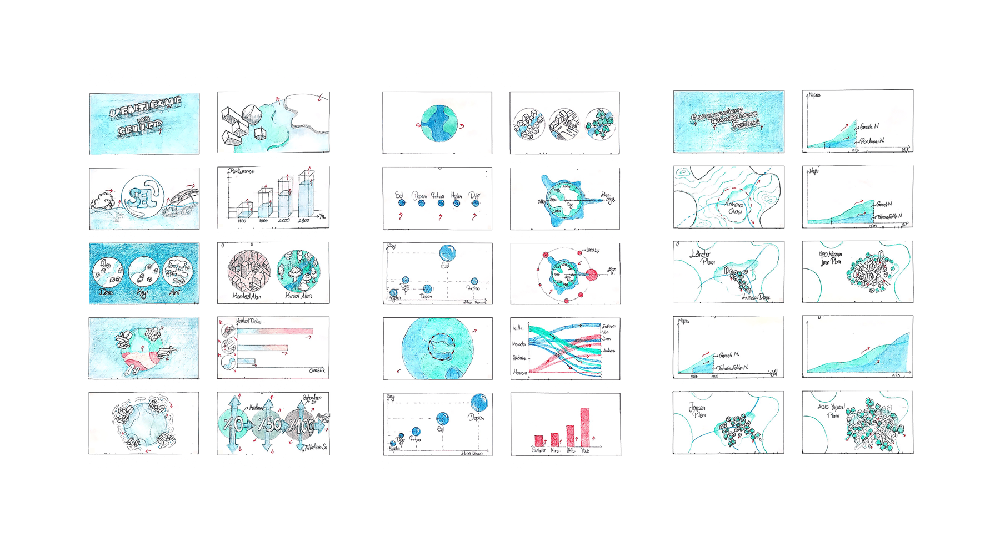
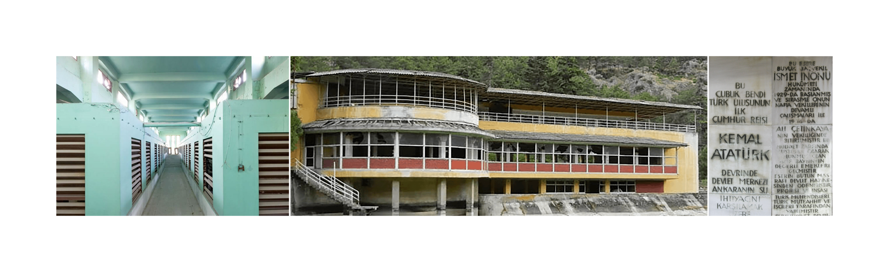
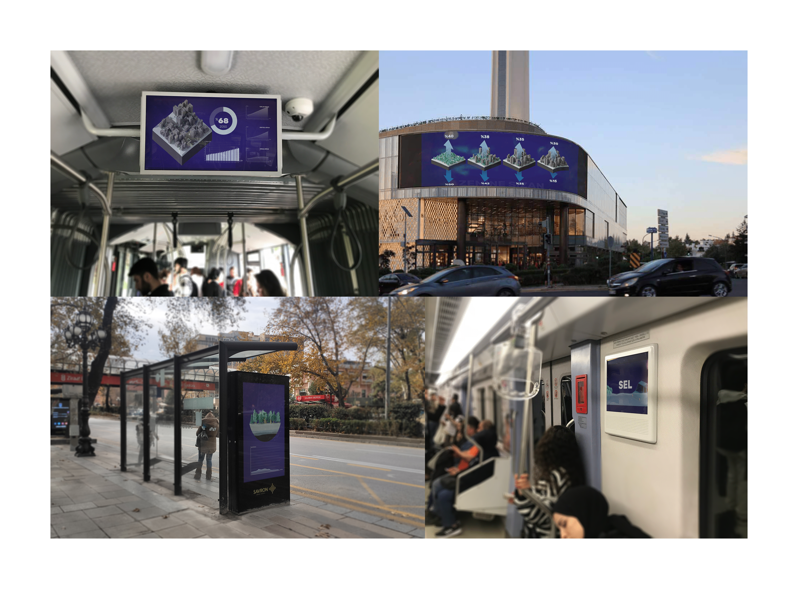

The project aims to demonstrate the facts about unplanned urbanization triggering flash floods, which causes severe economical loss, injuries and high levels of death. The city of Ankara is chosen for its history of poor urban planning. The city also lost its rivers, in order to create more space and infrastructure for the rapidly increasing population. Therefore the project also stresses that rivers are essential for the regulation of water circulation in urban areas.
The project includes 3 short videos, where in each video, a different subtopic is highlighted. In the videos, the data that represent the severity of floods and their outcomes are presented through a variety of data visualization methods.
Process
The data aimed to be represented was collected, filtered and organized. Then, different methods and graphic styles that will represent the data accurately were explored. The information was classified into three parts and the scripts were formed accordingly. Afterwards, storyboards of the three videos were designed. The required visuals were created using Blender and Illustrator. Finally, using After Effects and Adobe Premiere, the final video was formed.

Storyboards
The first video emphasizes the effect of unplanned urbanization and global warming on increased numbers of floods, globally. The second video dwells on the floods in Turkey, and reveals the data related to it. The third video presents the urbanization process of Ankara, and how its rivers were eliminated from the urban system. Its effect on floods happening currently is emphasized.

Inspiration
Water related structures built in the Early Republican Era were used as an inspiration for selecting the font and color palette. These buildings are Su Süzgeci, Çubuk Bendi, and Çubuk Baraj Gazinosu. Currently these structures are demolished, representing the destruction of the streams as the city expanded.

The Video
The Prototypes
